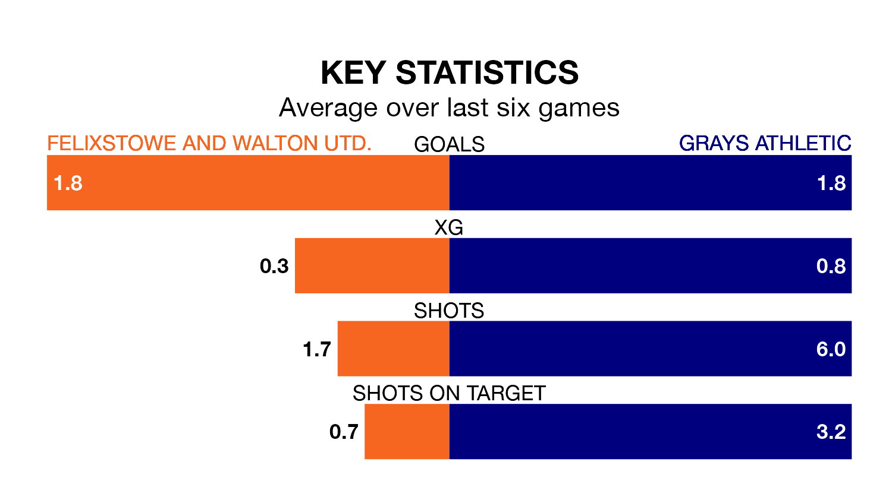

Mid-season relegation candidates Grays Athletic face a challenge away against high-flying Felixstowe and Walton Utd. on Saturday.
Grays Athletic are 17th in the Isthmian League Division One – North table, and have picked up four wins and six draws in their 23 games to date.
Felixstowe & Walton Utd., meanwhile, are second in the standings with 50 points, having won 15 and drawn five of their first 24 matches, and are three points behind table-toppers Lowestoft Town.
With 56 goals in 24 games so far this season, Felixstowe & Walton Utd. are the league's third-highest scorers with 2.3 goals per game. And they are conceding fewer than average, letting in 28 goals at a rate of 1.2 per game.
Grays, meanwhile, are below average scorers, with 1.3 goals per game, compared to a league average of 1.7. They have conceded 1.9 goals per game.
The hosts are in fantastic form in the Isthmian League Division One North, with five wins and a draw from their last six games.
With two wins and a draw over that period, Athletic's form is much worse – they have taken seven points from 18, compared to Felixstowe & Walton Utd.'s 16.
In the last five years, Felixstowe & Walton Utd. and Grays have played each other on five occasions. Felixstowe & Walton Utd. won two of them and Grays three.
On average, Felixstowe & Walton Utd. scored 1.2 goals and Grays 1.4 in those matches.
Their last meeting was on October 28, when Felixstowe & Walton Utd. won 3-0 away.
Felixstowe & Walton Utd.'s last match was on February 13, a 2-0 win against Brightlingsea Regent.
Grays lost 3-2 against New Salamis last time out, on February 9.
Updated: 12:18 (UTC), 19/02/24